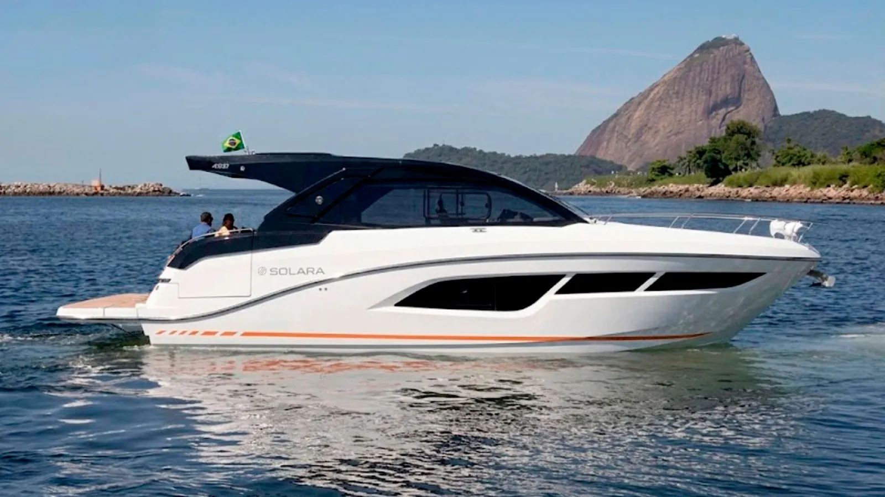

Solara 455 Bowrider
Lancha Solara
Preço sob consulta

Lancha bowrider de 14,00 m e 4,05 m de boca, com dois camarotes, dois toaletes e capacidade para 19 passageiros mais o piloto durante o dia. Pode ser equipada com dois MerCruiser V8 de 380 hp, a gasolina, ou dois Volvo Penta D6 de 440 ou 480 hp, a diesel, ambos com centro-rabeta.
Ficha técnica
| Comprimento | 14,00 m |
|---|---|
| Boca | 4,05 m |
| Calado | 0,60 m, leve · 0,80 m, pesado |
| Passageiros | Dia 19+1 · Noite 4 |
| Deslocamento | 14,0 t |
| Cabine | 2 camarotes e 2 toaletes |
| Tanque de combustível | 1.000 L |
| Tanque de água doce | 400 L |
| Motorização, gasolina | MerCruiser, centro-rabeta, 2 x V8 8.2 de 380 hp |
| Motorização, diesel | Volvo Penta, centro-rabeta, 2 x D6 de 440 ou 480 hp |
Itens de série em destaque
- Cozinha gourmet no cockpit, com bancada em Corian, fogão de indução, frigobar e churrasqueira a carvão
- Fechamento do cockpit com porta em aço inox e vidro
- Gerador, ar-condicionado e transformador de 8.000 W
- Guincho elétrico de 1.500 W, com 50 m de corrente e âncora de 20 kg
- Plataforma de popa em fibra e teca em madeira completa
- Luz subaquática, 2 pares
- Três TVs de 32 polegadas smart: camarote de proa, camarote de meia-nau e cockpit
- Som com 6 alto-falantes e subwoofer
- Toalete com box em acrílico, vaso sanitário elétrico e bancada em Corian
Itens opcionais
- Carreta rodo encalhe
- Tenda na proa
- Faixa na linha d'água
- Flap
- Gerador Onan 9.0 (upgrade)
- GPS 12" com sonda
- Glass adicional de 12" no cockpit
- Joystick de popa com docking station
- Kit de relógios completo
- Plataforma submergível
- Sistema Zipwake
- Sistema anti-cracas com 2 kits
Imagens ilustrativas. As informações podem mudar; confirmar com a Nautica Motors.
Nautica Motors, revendedor autorizado Solara em Belém.